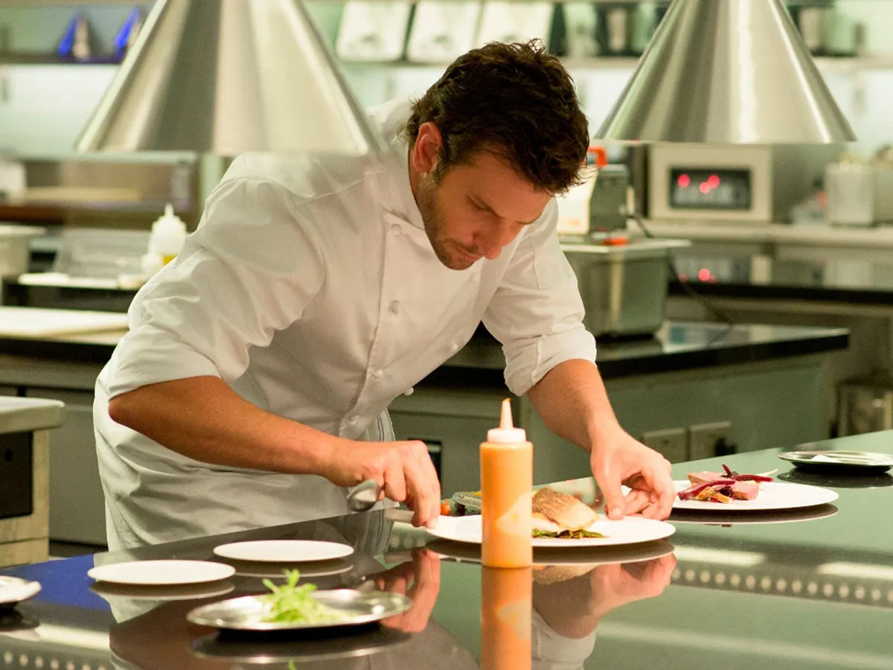

"Simplicidad Gastronómica: Recetas que Deleitan"
La mejor experiencia culinaria para disfrutar uno mismo o en compañía
Muy buenas a todos nuestros queridos internautas, somos el dúo de chefs principales encargados del restaurante "Sinfonía de Sabores", de 1 estella michelin y de 2 soles repsol, dentro de la provincia de Cádiz.
Nuestro objetivo al crear esta página es que todos podamos llegar a comer y disfrutar nuestras recetas más exitosas para desayuno,
almuerzo y cena por supuesto. También así enseñamos a todos los lectores que pueda
En nuestra página web, te invitamos a explorar un universo de sabores excepcionales y texturas exquisitas, donde cada plato es una obra maestra de la cocina contemporánea. Nuestro equipo de chefs expertos trabaja incansablemente para ofrecerte una experiencia culinaria única, donde la calidad y la creatividad se unen para crear momentos inolvidables alrededor de la mesa. Ya sea que busques una cena íntima para dos o un banquete para celebrar ocasiones especiales, estamos aquí para hacer realidad tus sueños gastronómicos. Únete a nosotros y descubre el arte de la buena mesa en su máxima expresión.
Nuestra prioridad ahora es recomendarles recetas de nuestros compañeros chefs de un alimento infravalorado en algunas ocasiones como los hongos. Setas, champiñones son un ejemplo de estas.
En nuestra pestaña Tutoriales podreís observar nuestra receta favorita para poder hacerla en casa un plato tan delicioso como sencillo aunque cuanto más practica tengais en la cocina mejor os saldrá.